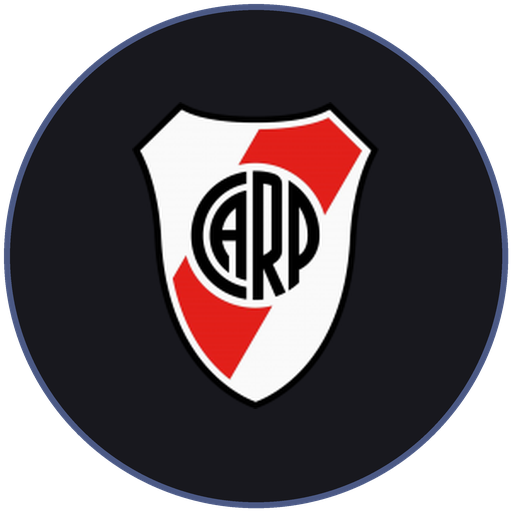
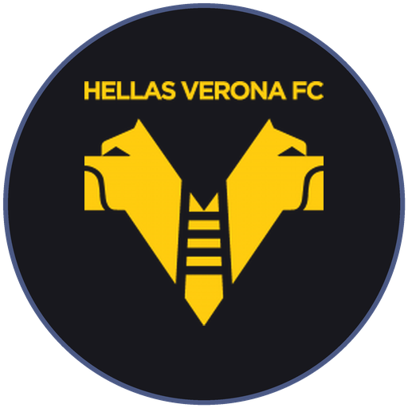
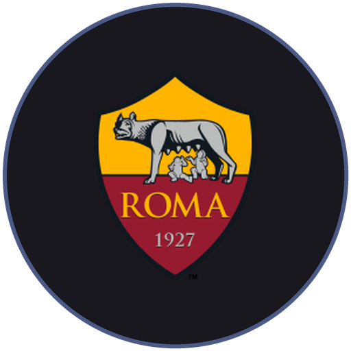
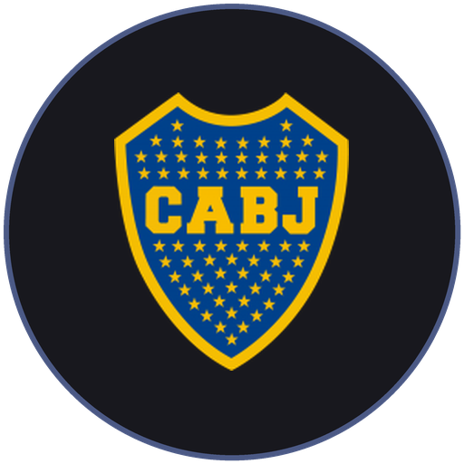
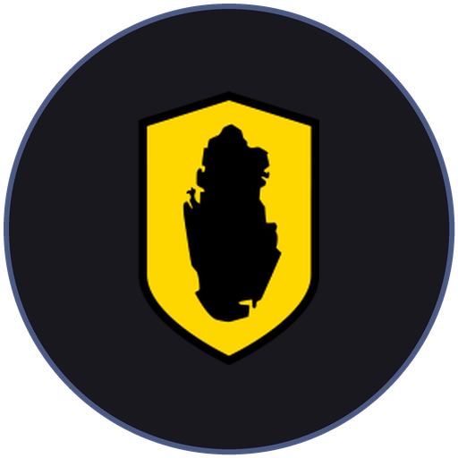
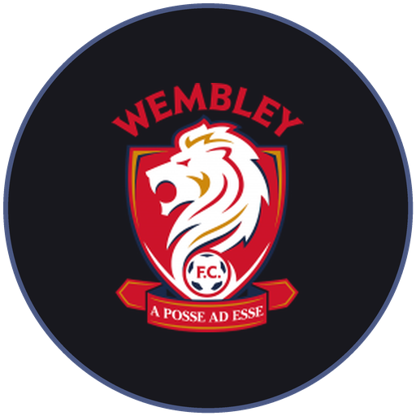
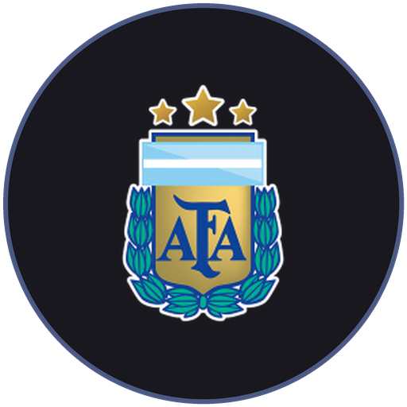

01
Assessment
Video analysis, performance data and an interview with the player and his family.
Caniggia Football Agency represents professional footballers at every stage of their careers. Built on Claudio Paul Caniggia’s experience at the highest level in Argentina, Italy, Portugal and Scotland, we connect talent with clubs worldwide and plan every move with a long-term vision.
Few players, full dedication. Every player we represent
has a direct contact and a written career plan.
Video analysis, performance data and an interview with the player and his family.
Clear goals at one, three and five years: leagues, clubs and concrete steps.
We present, negotiate and close every deal with speed and precision.
By the player's side through adaptation, the day-to-day and the next decision.
Founder
Known worldwide as "The Son of the Wind", Claudio Caniggia made speed his signature. A World Cup finalist with Argentina in 1990 and Copa América champion in 1991, he played for River Plate, Roma, Benfica, Boca Juniors and Rangers. Today he brings that experience to every player's career.

River Plate
1987–1988
From River Plate's academy to the first team.

Hellas Verona
1988–1989
First steps in Serie A with Hellas Verona.
Atalanta
1989–1992
Three seasons at Atalanta and a World Cup final with Argentina.

AS Roma
1992–1993
Signs for AS Roma in a €6.75m transfer.
Benfica
1994–1995
A new chapter in Portugal with Benfica.

Boca Juniors
1995–1998
Back home, wearing the Boca Juniors shirt.
Atalanta
1999–2000
A second spell at Atalanta.
Dundee FC
2000–2001
Lands in Scottish football with Dundee FC.
Rangers
2001–2003
Two seasons at Rangers.

Qatar SC
2003–2005
Closes his professional career at Qatar SC.

Wembley FC
2012
A brief return to the pitch at 45 with Wembley FC.

Argentina
1987–2002
Fifty caps and sixteen goals in the blue and white. Caniggia lit up Italia '90, knocking out Brazil and scoring the semi-final equaliser against Italy on the way to the final. A year later, he lifted the Copa América.
Services
Contracts, transfers, image and finances, all handled by one team. Our players bring the football. We take care of everything else.
Terms built on real market data, so every contract reflects what the player is truly worth. Every clause is reviewed in detail and every renewal planned well before it becomes urgent.
Direct relationships with clubs across South America, Europe, the MLS and the Middle East. We present the player, lead the negotiation and see every deal through to signature.
A strong, consistent public profile, on and off the pitch, and brand partnerships that fit the player and grow with their career.
Expert tax and investment guidance from specialists we trust, so what a player builds over a career is protected for life after football.
Clubs, sporting directors, players, families, partners or press: we'd be glad to hear from you.